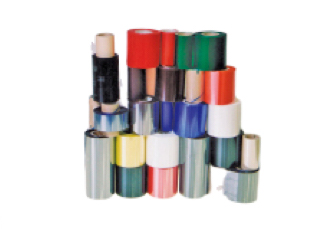
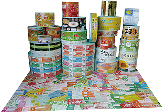
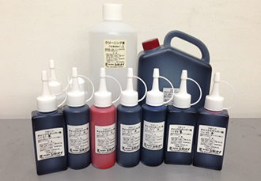

サーマルリボン

純正リボンは、フィルム以外にもラベルや紙類に適した印字品質の高いリボンから耐擦過性、耐熱性（ボイルやレトルト）、耐冷凍性、耐油性に優れたリボン、カラーリボンまで様々なリボンを取り揃えています。印字や表示は、リボン品質、包装材の材質、後処理、その後の環境にも左右されます。状況や環境にあったリボンの選択と事前の充分なテストはとても大切です。 リボンの選択についてはサーマルリボンの種類をご参考にしてください。
シール＆ラベル UL-USA認定

シール＆ラベルの企画・制作
鶏卵ラベルやその他のシール・ラベルは自社松本工場で生産し、迅速・安価なご提供が可能です。お客様が安心してご使用いただけるラベル製造を行っています。（UL認定工場資格取得済み）デザインについては弊社提携企業の複数のデザイナーが担当し、お客様が満足いただけるデザインをご提供いたします。
- 鶏卵パック用ラベル・インナーラベル
- シークレットシール・ワンポイントシール
- POPシール・ファームタック
- 品名シール・販促シール
- 表示シール・警告シール
- 豆シール・・プリンター用ロール紙
- シルク印刷銘板・銘板シール
インク

純正インクは、捺印対象物であるラベルや紙に対して捺印に適した不揮発溶剤性インキをはじめとして用途や目的によって速乾性があるインキや優れた密着性、耐水性、耐光性を発揮するものまで多種のインキを取り揃えています。色は黒・赤・青が良く使われます。
シンメイ製チェックスタンパーには純正のインクをお使いください。